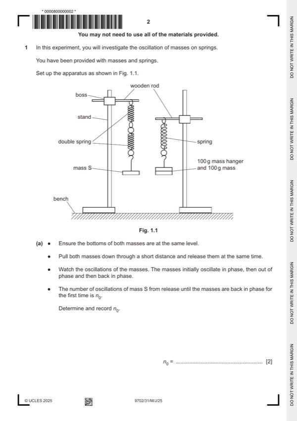

Question 1

Original paper page 2
Part 1(a) — solution
Final value of n0 with no unit and in the range 10 ⩽ n0 ⩽ 30. 1
Evidence of repeats. 1
Mark points
- Include the ideas shown in the solution above.
Part 1(b)(i) — solution
n ˂ n0. 1
Mark points
- Include the ideas shown in the solution above.
Part 1(b)(ii) — solution
Correct calculation of N. 1
Mark points
- Include the ideas shown in the solution above.
Part 1(c) — solution
- Range of M: Must include Mmin = 10 g and Mmax ⩾ 60 g. 1
Mark points
- Range of M: Must include Mmin = 10 g and Mmax ⩾ 60 g. 1
Part 1(d)(i) — solution
Axes: 1
Axes must be labelled with the required quantities.
Scales must be chosen so that the plotted points occupy at least half the graph grid in both the x and y directions.
Scale markings are no more than 2 cm (one large square) apart.
Sensible scales must be used, no awkward scales (e.g. 3:10 or fractions).
Plotting of points: 1
All observations in the table must be plotted on the grid.
Diameter of plotted points must be ⩽ half a small square.
Points must be plotted to an accuracy of half a small square in both x and y directions.
Quality: 1
All N3 values are positive and trend of points must be positive.
All points in the table (at least 4 points) must be plotted on the grid for this mark to be awarded.
It must be possible to draw a straight line that is within 5 g on the M-axis of all plotted points.
University Press & Assessment 2025 Page 7 of 10
9702/31 Cambridge International AS & A Level – Mark Scheme May/June 2025
Mark points
- Include the ideas shown in the solution above.
Part 1(d)(ii) — solution
Line of best fit: 1
‘Best fit’ is judged by the balance of all points on the grid (at least 4 points) about the candidate’s line.
There must be an even distribution of points either side of the line along the full length.
Lines must not be kinked or thicker than half a square.
Some candidates may choose to identify an anomalous point. If 5 or more points are plotted and they identify one point as
anomalous (e.g. by circling or labelling) then this point is to be disregarded when judging the line of best fit.
Mark points
- Include the ideas shown in the solution above.
Part 1(d)(iii) — solution
- Intercept read directly from the graph, with read-off at M = 0, accurate to half a small square in y direction
- Correct read-off from a point on the line is substituted into y = mx + c or an equivalent expression
Mark points
- Intercept read directly from the graph, with read-off at M = 0, accurate to half a small square in y direction
- Correct read-off from a point on the line is substituted into y = mx + c or an equivalent expression
Part 1(e) — solution
- Value of P = candidate’s gradient value and value of Q = candidate’s intercept value. 1
Mark points
- Value of P = candidate’s gradient value and value of Q = candidate’s intercept value. 1
Part 1 — solution
mark for each point up to a maximum of 4.
Mark points
- Include the ideas shown in the solution above.
Part 1 — solution
mark for each point up to a maximum of 4.
University Press & Assessment 2025 Page 10 of 10
Mark points
- Include the ideas shown in the solution above.